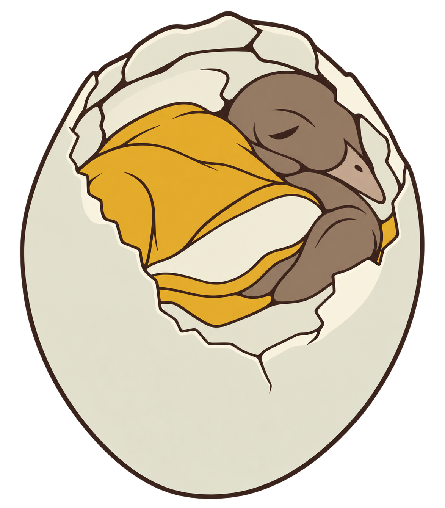

Produktionsansicht mit Motivspoiler. Technische Zertifizierung, Motivqualität und redaktionelle Freigabe sind getrennt. Motiv-/Spielabnahme: offen.
Quelle: balut-m-r02 · Datei: motif-m-r02.png
Original SHA-256: 1ca8a80dffbf288eb350931ac94764e4508d191296653191c7f6b99f75a5a5e0
Normalisiert SHA-256: 1780788389c339b0e849480ef58992f6d8a9c0232c996f3ed08e9c1484098889

{'alpha_below': 128, 'background': '#ffffff', 'briefing': 'Ein aufrechtes geöffnetes Balut-Ei; Dotter links/zentral, Embryokopf oben rechts, geschlossener Schnabel nach rechts unten, eingerollter Körper, helles Eiweiß in unterer Mitte und gebrochene Schalenkante erhalten. Keine neue Pose, Zusatzformen oder Randanker. Vier gezielte freigegebene Größen-/Palettenvarianten.', 'crop': [54, 29, 1120, 1316], 'fit': 'contain', 'format': 'picross-image-design-v1', 'height': 36, 'mode': 'color', 'origin': 'Auftragsgenerierte Motivvorlage M-r02 aus dem tatsächlich freigegebenen Abschlussbild A-r01; Herkunft und Dateihashes in images/motif-m-r02.provenance.json.', 'palette': [{'id': 'egg', 'rgb': '#e4e2cd'}, {'id': 'embryo', 'rgb': '#8a7461'}, {'id': 'outline', 'rgb': '#49382e'}, {'id': 'yolk', 'rgb': '#d9a12b'}], 'rights': 'Auftragsgenerierte Illustration für venomenon328/picross; keine fremden Bildassets. Tatsächliche Bild- und Motivfreigaben im Paket.', 'source_id': 'balut-m-r02', 'variants': [{'id': 'c30x36-4c', 'method': 'area', 'threshold': 128}], 'width': 30, 'working_mode': 'faithful'}
{'format': 'PNG', 'source_size': [1174, 1340], 'source_mode': 'RGBA', 'orientation': 1, 'normalized_size': [1174, 1340], 'color_treatment': 'untagged/sRGB RGB or gray interpreted as sRGB', 'icc_sha256': None, 'alpha': 'preserved, composited against design background only during rasterization'}
{'tool': 'rp3-image-1', 'pillow': '12.3.0', 'jpeg': '8.0', 'jpeg_turbo': '3.1.4.1', 'littlecms': '2.19', 'zlib': '1.3.1.zlib-ng'}
{'status': 'solved', 'proof_verified': True, 'certified': True, 'logic_hash': 'a0e45eca625af28a1b9e2e14273c5918185eab77d2f438df627bb560a50d267a', 'profile': {'id': 'full-line-color', 'version': 1, 'start': 'unknown', 'deduction': 'all-line-supported-values', 'search': False}, 'profile_hash': 'f63ee6c88e6baa9f6a22f386ae532482d7ffb7b9a2237867f0d7cd9960ab608f', 'steps': 149, 'line_evaluations': 215, 'elapsed_seconds': 0.10239920000458369}
Kandidat: f075a6ce38282ac1e17077bbfe15fd961307e1cfbbe946ea34c2e995d6e5f7b2
{'id': 'c30x36-4c', 'method': 'area', 'threshold': 128}
| Linie | Vollständige Hinweise (Länge:Farb-ID) |
|---|---|
| 1 | 2:embryo |
| 2 | 10:egg |
| 3 | 1:embryo 7:egg 1:embryo 4:egg |
| 4 | 1:embryo 3:egg 1:embryo 9:egg 1:embryo |
| 5 | 1:embryo 3:egg 2:embryo 7:egg 4:embryo 2:egg |
| 6 | 3:egg 1:embryo 8:egg 7:embryo 2:egg |
| 7 | 1:egg 1:embryo 8:egg 9:embryo 2:egg |
| 8 | 1:egg 2:embryo 3:egg 4:yolk 1:embryo 1:outline 9:embryo 2:egg |
| 9 | 4:egg 1:embryo 7:yolk 10:embryo 1:egg |
| 10 | 1:embryo 3:egg 1:embryo 9:yolk 9:embryo 1:egg 1:embryo |
| 11 | 3:egg 1:embryo 10:yolk 9:embryo 2:egg |
| 12 | 3:egg 1:embryo 13:yolk 2:embryo 1:outline 5:embryo 1:egg 1:embryo |
| 13 | 4:egg 13:yolk 8:embryo 1:egg 1:embryo |
| 14 | 4:egg 15:yolk 6:embryo 3:egg |
| 15 | 6:egg 11:yolk 4:egg 5:embryo 3:egg |
| 16 | 6:egg 1:embryo 8:yolk 6:egg 6:embryo 1:egg 1:embryo |
| 17 | 7:egg 6:yolk 7:egg 6:embryo 1:yolk 1:egg 1:embryo |
| 18 | 8:egg 4:yolk 7:egg 6:embryo 1:outline 2:egg 1:embryo |
| 19 | 9:egg 1:embryo 7:egg 1:yolk 8:embryo 2:egg 1:embryo |
| 20 | 9:egg 1:embryo 2:yolk 4:egg 1:yolk 6:embryo 6:egg |
| 21 | 10:egg 6:yolk 6:embryo 7:egg |
| 22 | 10:egg 1:embryo 7:yolk 2:embryo 8:egg |
| 23 | 11:egg 4:yolk 1:embryo 11:egg |
| 24 | 26:egg 1:embryo |
| 25 | 1:embryo 26:egg |
| 26 | 26:egg |
| 27 | 24:egg 1:embryo |
| 28 | 1:embryo 23:egg |
| 29 | 1:embryo 21:egg |
| 30 | 20:egg 1:embryo |
| 31 | 1:embryo 18:egg 1:embryo |
| 32 | 1:embryo 16:egg 1:embryo |
| 33 | 1:embryo 14:egg 1:embryo |
| 34 | 1:embryo 12:egg 1:embryo |
| 35 | 9:egg 1:embryo |
| 36 | 1:egg 4:embryo 1:egg |
| Linie | Vollständige Hinweise (Länge:Farb-ID) |
|---|---|
| 1 | 8:egg |
| 2 | 13:egg 1:embryo 1:egg |
| 3 | 1:embryo 17:egg 1:embryo |
| 4 | 21:egg 1:embryo |
| 5 | 2:egg 1:embryo 3:egg 1:embryo 18:egg 1:embryo |
| 6 | 1:embryo 1:egg 2:embryo 2:egg 1:embryo 3:yolk 17:egg 1:embryo |
| 7 | 5:egg 1:embryo 5:yolk 1:embryo 16:egg 1:embryo |
| 8 | 1:embryo 1:egg 1:embryo 2:egg 1:embryo 8:yolk 16:egg 1:embryo |
| 9 | 1:embryo 5:egg 10:yolk 16:egg |
| 10 | 2:egg 1:embryo 2:egg 11:yolk 2:embryo 15:egg |
| 11 | 3:egg 1:embryo 2:egg 11:yolk 1:egg 2:yolk 1:embryo 13:egg |
| 12 | 2:egg 1:embryo 3:egg 11:yolk 1:egg 3:yolk 14:egg |
| 13 | 6:egg 10:yolk 3:egg 3:yolk 12:egg 1:embryo |
| 14 | 6:egg 1:embryo 8:yolk 4:egg 3:yolk 12:egg 1:embryo |
| 15 | 1:embryo 5:egg 1:embryo 1:outline 8:yolk 4:egg 3:yolk 12:egg 1:embryo |
| 16 | 1:embryo 5:egg 3:embryo 6:yolk 5:egg 3:yolk 12:egg 1:embryo |
| 17 | 1:egg 1:embryo 2:egg 6:embryo 4:yolk 4:egg 1:yolk 1:embryo 1:yolk 1:embryo 13:egg |
| 18 | 4:egg 6:embryo 3:yolk 4:egg 1:yolk 2:embryo 1:yolk 13:egg |
| 19 | 3:egg 9:embryo 1:yolk 4:egg 4:embryo 12:egg 1:embryo |
| 20 | 3:egg 9:embryo 1:yolk 3:egg 5:embryo 12:egg |
| 21 | 2:egg 7:embryo 1:outline 2:embryo 2:egg 5:embryo 12:egg 1:embryo |
| 22 | 18:embryo 11:egg 1:embryo |
| 23 | 1:egg 15:embryo 11:egg 1:embryo |
| 24 | 3:egg 12:embryo 11:egg 1:embryo |
| 25 | 3:egg 11:embryo 10:egg 1:embryo |
| 26 | 4:egg 6:embryo 1:outline 1:embryo 9:egg |
| 27 | 1:embryo 5:egg 1:embryo 1:yolk 9:egg 1:embryo |
| 28 | 2:embryo 10:egg 1:embryo 1:egg |
| 29 | 2:egg 4:embryo 2:egg |
| 30 | – |